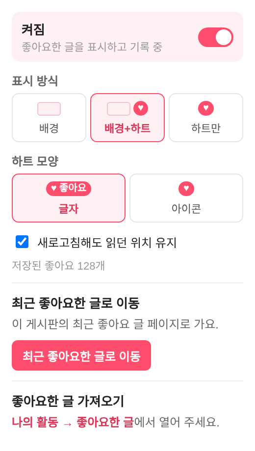

새로고침해도 읽던 곳 그대로, 설정 창은 더 보기 편하게.
저장된 좋아요 기록은 업데이트해도 그대로 유지돼요.
글을 읽다가 새로고침해도 처음부터 다시
내려갈 필요 없어요. 같은 글의 읽던 위치로
바로 돌아가요.
사진이 많은 글도 사진이 다 뜰 때까지
읽던 문단·사진에 맞춰 줘요.
돌아간 뒤 바로 스크롤하면 그대로 멈추고,
목록·메인 화면에서는 동작하지 않아요.
표시 방식과 하트 모양을 한 줄 버튼으로 바꿔서
스크롤 없이 한눈에 보여요.
새 기능도 여기서 켜고 꺼요.
"새로고침해도 읽던 위치 유지"를 체크하면 켜지고,
체크를 풀면 꺼져요. (처음엔 켜져 있어요)
